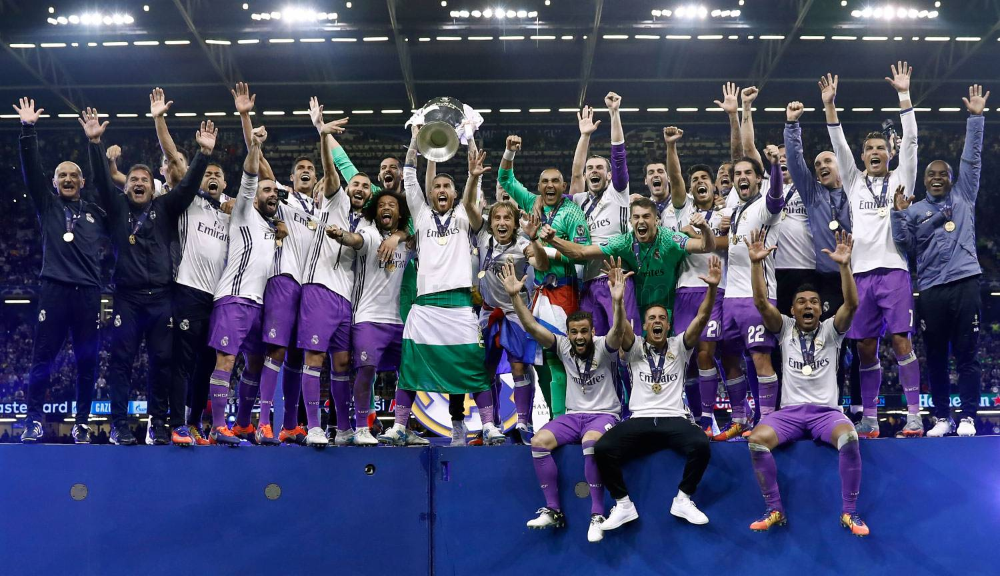
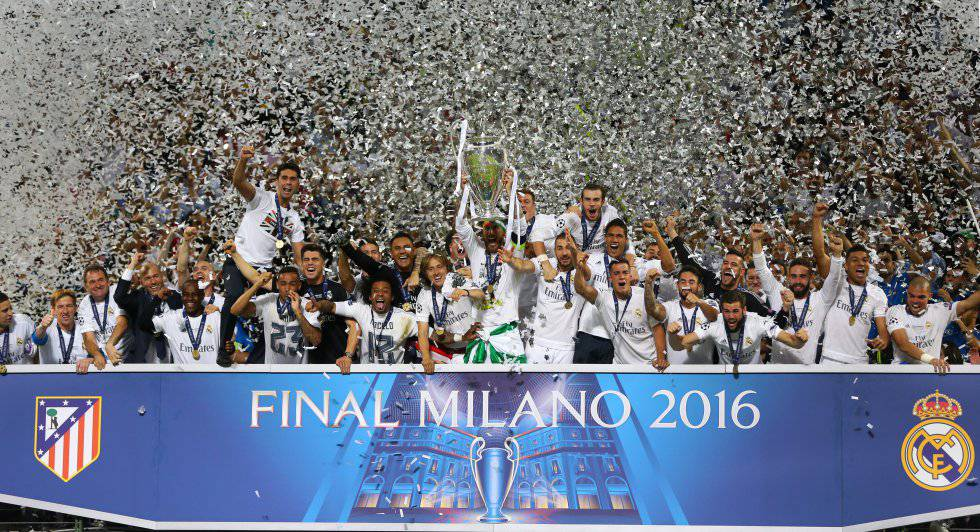
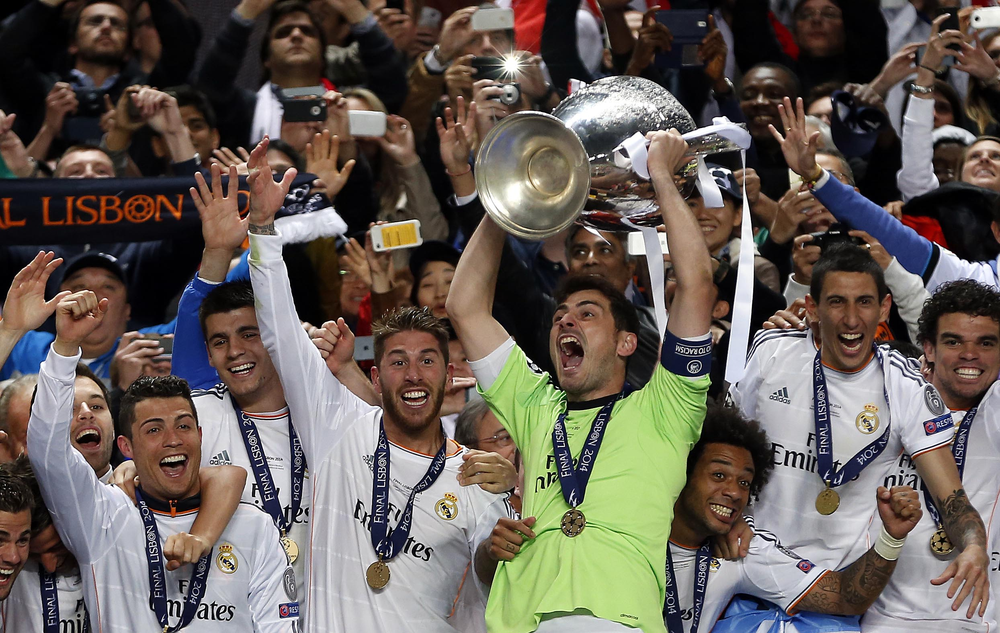
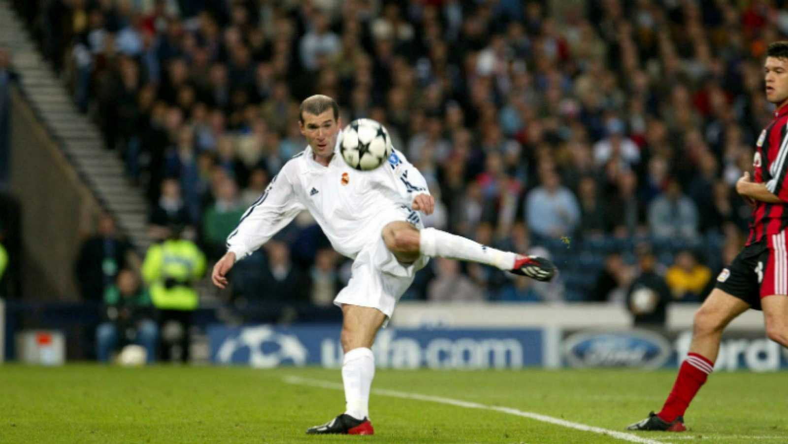

Real Madrid amplió su leyenda en la Copa de Europa. Los blancos alzaron la Duodécima gracias a su gran victoria
ante la Juventus por 1-4, con el estadio Nacional de Gales como escenario. Cristiano Ronaldo fue elegido MVP de
la final gracias a sus dos goles. El portugués abrió el marcador, aunque antes del descanso Mandzukic hizo el empate.

Aguardaba la reedición de la final de Lisboa. Con el mismo protagonista de aquel encuentro, Sergio Ramos remató en el área una falta lateral ejecutada por Kroos para adelantar al Madrid en el marcador. El Atlético de Madrid tenía la posesión pero las ocasiones más claras fueron de los blancos. Sin embargo, Carrasco puso las tablas en la segunda parte y llevó el partido a la prórroga. Con ambos equipos mermados físicamente, decidieron los penaltis. Y llegó la Undécima: los goles de Lucas Vázquez, Marcelo, Bale, Ramos y Cristiano Ronaldo valen otro título para el Rey de Europa.

La final de Lisboa, que enfrentaba por primera vez a dos equipos de la misma ciudad, no decepcionó. El Madrid llevó los 120 minutos el peso del encuentro. Sin embargo, un gol de Godín desniveló el marcador al filo del descanso. Los blancos atacaban sin descanso aunque sin premio de cara a puerta.
Pero el Madrid nunca se rinde. Sergio Ramos se elevó desde Camas para cabecear un centro de Modric y poner las tablas en el 93. La prórroga fue blanca. Bale, Marcelo y Cristiano sellaron un triunfo histórico en los últimos minutos.

El Madrid partía como favorito ante el Bayer Leverkusen. A pesar de adelantarse en el marcador con una jugada clásica entre Roberto Carlos y Raúl, los alemanes empataron gracias a un cabezazo de Lucio.
Pero la final será recordada por uno de los mejores goles de la historia de la Champions. La dificultad del golpeo, el centro de Roberto Carlos, la importancia del choque; una genialidad a la altura de Zidane, capaz de ejecutar una volea imposible a la escuadra derecha, para ganar una Champions. Los minutos finales de Casillas, héroe improvisado por la lesión de César, hicieron el resto ante un digno Leverkusen.
Real Madrid amplió su leyenda en la Copa de Europa. Los blancos alzaron la Duodécima gracias a su gran victoria
ante la Juventus por 1-4, con el estadio Nacional de Gales como escenario. Cristiano Ronaldo fue elegido MVP de
la final gracias a sus dos goles. El portugués abrió el marcador, aunque antes del descanso Mandzukic hizo el empate.